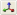

Caps Lock A If is selected:
If the camera is rotating clockwise,
then stops the camera rotation.
If the camera is not rotating, then rotates
it counter-clockwise.
D If is selected:
If the camera is rotating counter-clockwise,
then stops the camera rotation.
If the camera is not rotating, then rotates
it clockwise.
E Q S W Ctrl+1,Ctrl+2,Ctrl+3,Ctrl+4 The camera speed can also be set by the
 ,
,
,
,
,
,
 toolbar buttons.
toolbar buttons. Ctrl+I This value can also be set by the Camera Speed group of toolbar buttons – , , ,

Ctrl+M This value can also be set by the Camera Mode group of toolbar buttons – , , , ,
button click
Performs the same function as the toolbar button.
button drag
Invert Mouse setting reverses the effect of up and down drags.
(accessed via Edit→Preferences menu item.)
wheel rotate
If
Space is pressed:
Increases or decreases the camera speed,depending on the direction of the wheel rotation.
The camera speed can also be set by the
,
,
,
toolbar buttons.